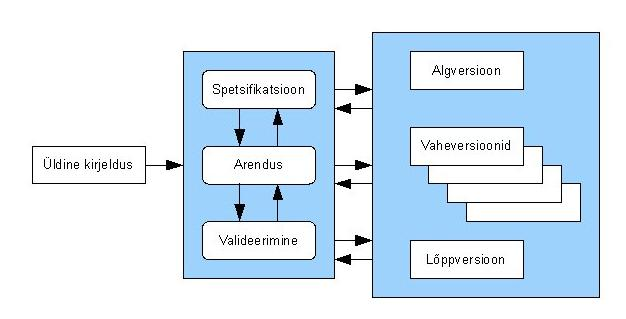

Inkrementaalne, Spiraal ja Prototüüpimine
Inkrementaalne Arendus:
on etapiviisiline ja ajagraafikut järgiv strateegia, kus süsteemi erinevaid osi
arendatakse erinevatel aegadel ja erineva kiirusega, ning kui üks osa valmis saab
, integreeritakse see juba valmis süsteemiga. Alternatiivne strateegia oleks kodeerida
kõik süsteemi osad ja siis kogu kood integreerida ühekorraga
-
Nõute analüüs:
Nõuete analüüsis igal ajal koostatakse plaan ainult järgmise juurdekasvu jaoks,
mitte mingisuguse pikaajalise plaani jaoks. Seetõttu on versiooni lihtsalt vastavalt
kliendi vajadustele muuta.
-
Disain ja arendus:
Plaan koostatakse igal ajal ainult järgmise juurdekasvu jaoks, mitte mingisuguse pika-
ajalise plaani jaoks. Seetõttu on versiooni lihtsalt vastavalt kliendi vajadustele muuta.
Arendusmeekond kohustub esmalt välja töötama süsteemi põhifunktsioonid(need ei vaja teenuseid muudest)
Kui põhifunktsioonid on täielikult välja töötatud, täiustatakse neid, et suurendada vüimaluste taset,
lisades järjestikustesse versioonidesse uusi funktsioone.
Iga järkjärguline versioon töötatakse tavaliselt välja iteratiivse juga arendusmudeli abil.
-
Juurutamine ja testimine:
Pärast nõuete kogumist ja spetsifikiatsiooni jagatakse nõuded mitems erinevaks versiooniks.
Esiteks, iga järjestikuse sammuga koostatakse järgmine versioon ja seejärel juurutatakse kliendi saidil.
Väljatöötamisel ja testimisel kontrollitakse ja testitakse toodet mudeli tegeliku protsessi jaoks
-
Rakendamine:
Juurutamisel pärast viimast versiooni on see nüüd kliendi saidil juurutatud.

| Flaws |
Strengths |
Progress ei ole hästi järgitav
On vaja pidevalt materjale progre-
ssi mõõtmiseks |
Kulutused mida teha nõudmiste
muutumise tõttu vähenevad |
Süsteemi struktuur halveneb
uute osade lisandumisel, on vaja re-
faktoreerimist |
Kergem on saada tagasisidet |
allikad:
EUCIP